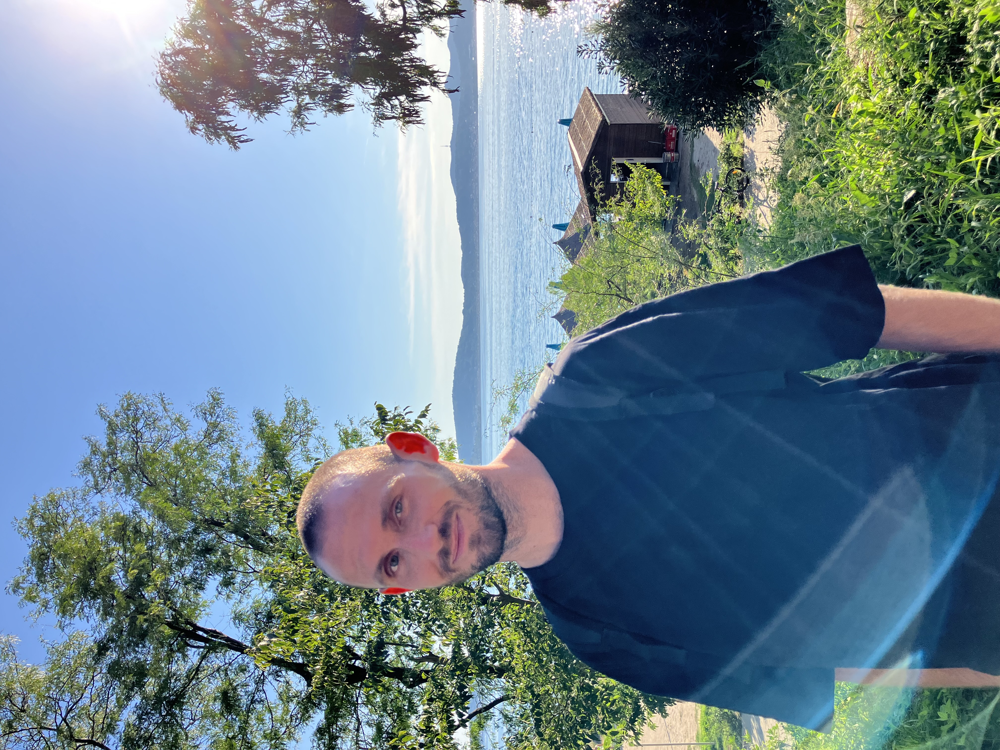

My space

Tento text je teraz zarovnaný k obom okrajom, čo vytvára čistý blokový vizuál typický pre umelecké katalógy. Celý web využíva len dve definované veľkosti písma, čím dosahujeme maximálnu vizuálnu stabilitu. Pri otočení mobilu na šírku zostáva šírka textu obmedzená, aby sa zachovala jeho čitateľnosť a estetický dojem.